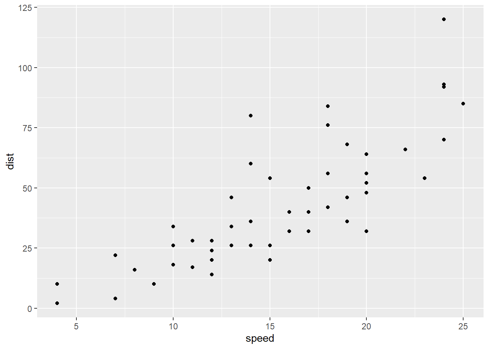

head(cars) speed dist
1 4 2
2 4 10
3 7 4
4 7 22
5 8 16
6 9 10The ggplot2 package needs to be intalled as it does not with R “out of the box”.
We use the install.packages() function to do this.
head(cars) speed dist
1 4 2
2 4 10
3 7 4
4 7 22
5 8 16
6 9 10To use ggplot I need to load it up before I can call any of the functions in the package. I do this with the library() function.
library(ggplot2)
ggplot()
All ggplot figures have at least 3 things: - data (the stuff we want to plot) - aesthetic mapping (aes values) - geoms
ggplot(cars) +
aes(x=speed, y=dist) +
geom_point()
ggplot is not the only graphing system in R there are lots of others. THere is even “base R” graphics.
plot(cars)
In ggplot we can add a trend line
ggplot(cars) +
aes(x=speed, y=dist) +
geom_point() +
geom_smooth()`geom_smooth()` using method = 'loess' and formula = 'y ~ x'
We can also make it straight and remove the SE region
ggplot(cars) +
aes(x=speed, y=dist) +
geom_point() +
geom_smooth(method="lm", se=FALSE)`geom_smooth()` using formula = 'y ~ x'
And add informative descriptions
ggplot(cars) +
aes(x=speed, y=dist) +
geom_point() +
labs(title = "Speed and Stopping Distances of Cars",
x = "Speed (MPH)",
y = "Stopping Distance (ft)",
subtitle = "Speed and Stopping Distances of Cars appear to be positively correlated",
caption="Dataset: 'cars'") +
geom_smooth(method="lm", se=FALSE) +
theme_bw()`geom_smooth()` using formula = 'y ~ x'url <- "https://bioboot.github.io/bimm143_S20/class-material/up_down_expression.txt"
genes <- read.delim(url)
head(genes) Gene Condition1 Condition2 State
1 A4GNT -3.6808610 -3.4401355 unchanging
2 AAAS 4.5479580 4.3864126 unchanging
3 AASDH 3.7190695 3.4787276 unchanging
4 AATF 5.0784720 5.0151916 unchanging
5 AATK 0.4711421 0.5598642 unchanging
6 AB015752.4 -3.6808610 -3.5921390 unchangingLet’s find out the number of rows
nrow(genes)[1] 5196What’s the number of columns and their names?
ncol(genes)[1] 4colnames(genes)[1] "Gene" "Condition1" "Condition2" "State" How many genes are upregulated?
table(genes$State)
down unchanging up
72 4997 127 Fraction of the total genes that’s upregulated:
round( table(genes$State)/nrow(genes) * 100, 2 )
down unchanging up
1.39 96.17 2.44 Let’s plot this data
ggplot(genes) +
aes(x=Condition1, y=Condition2) +
geom_point()
With color
p <- ggplot(genes) +
aes(x=Condition1, y=Condition2, col=State) +
geom_point()
p
Other colors
p + scale_colour_manual( values=c("blue","gray","red") )
And annotation
p + scale_colour_manual( values=c("blue","gray","red") ) + labs(title = "Gene Expression Changes Upon Drug Treatment")We get the data
# File location online
url <- "https://raw.githubusercontent.com/jennybc/gapminder/master/inst/extdata/gapminder.tsv"
gapminder <- read.delim(url)And filter just data from 2007
library(dplyr)
Attaching package: 'dplyr'The following objects are masked from 'package:stats':
filter, lagThe following objects are masked from 'package:base':
intersect, setdiff, setequal, uniongapminder_2007 <- gapminder %>% filter(year==2007)Now do a basic plot
ggplot(gapminder_2007) +
aes(x=gdpPercap, y=lifeExp) +
geom_point()
Let’s make overlapping dots more distinguishable
ggplot(gapminder_2007) +
aes(x=gdpPercap, y=lifeExp) +
geom_point(alpha=0.5)
And color!
ggplot(gapminder_2007) +
aes(x=gdpPercap, y=lifeExp, color=continent, size=pop) +
geom_point(alpha=0.5)
Or we could just color the dots by population
ggplot(gapminder_2007) +
aes(x = gdpPercap, y = lifeExp, color = pop) +
geom_point(alpha=0.8)
The dots’ size is not to scale, let’s fix that
ggplot(gapminder_2007) +
geom_point(aes(x = gdpPercap, y = lifeExp,
size = pop), alpha=0.5) +
scale_size_area(max_size = 10)
We now do it again for year 1957
gapminder_1957 <- gapminder %>% filter(year==1957)
ggplot(gapminder_1957) +
aes(x=gdpPercap, y=lifeExp, color=continent, size=pop) +
geom_point(alpha=0.7) +
scale_size_area(max_size = 15)
And compare it to 2007
gapminder_1957 <- gapminder %>% filter(year==1957 | year==2007)
ggplot(gapminder_1957) +
geom_point(aes(x = gdpPercap, y = lifeExp, color=continent,
size = pop), alpha=0.7) +
scale_size_area(max_size = 10) +
facet_wrap(~year)
gapminder_top5 <- gapminder %>%
filter(year==2007) %>%
arrange(desc(pop)) %>%
top_n(5, pop)
gapminder_top5 country continent year lifeExp pop gdpPercap
1 China Asia 2007 72.961 1318683096 4959.115
2 India Asia 2007 64.698 1110396331 2452.210
3 United States Americas 2007 78.242 301139947 42951.653
4 Indonesia Asia 2007 70.650 223547000 3540.652
5 Brazil Americas 2007 72.390 190010647 9065.801We can do a basic bar chart for population
ggplot(gapminder_top5) +
geom_col(aes(x = country, y = pop))
…or for life expectancy
ggplot(gapminder_top5) +
geom_col(aes(x = country, y = lifeExp))
We can also color the bars by continent
ggplot(gapminder_top5) +
geom_col(aes(x = country, y = pop, fill = continent))
…or by life expectancy
ggplot(gapminder_top5) +
geom_col(aes(x = country, y = pop, fill = lifeExp))
…or by gdpPercap
ggplot(gapminder_top5) +
aes(x=country, y=pop, fill=gdpPercap) +
geom_col()
Let’s reorder the bars by population (from biggest to lowest)
ggplot(gapminder_top5) +
aes(x=reorder(country, -pop), y=pop, fill=gdpPercap) +
geom_col()
Now we fill by country
ggplot(gapminder_top5) +
aes(x=reorder(country, -pop), y=pop, fill=country) +
geom_col(col="grey30") +
guides(fill="none")
Let’s visualize arrests in the USA with flipped bar charts
head(USArrests) Murder Assault UrbanPop Rape
Alabama 13.2 236 58 21.2
Alaska 10.0 263 48 44.5
Arizona 8.1 294 80 31.0
Arkansas 8.8 190 50 19.5
California 9.0 276 91 40.6
Colorado 7.9 204 78 38.7USArrests$State <- rownames(USArrests)
ggplot(USArrests) +
aes(x=reorder(State,Murder), y=Murder) +
geom_col() +
coord_flip()
We can combine points and lines to make it more easily understandable
ggplot(USArrests) +
aes(x=reorder(State,Murder), y=Murder) +
geom_point() +
geom_segment(aes(x=State,
xend=State,
y=0,
yend=Murder), color="blue") +
coord_flip()
sessionInfo()R version 4.3.1 (2023-06-16 ucrt)
Platform: x86_64-w64-mingw32/x64 (64-bit)
Running under: Windows 11 x64 (build 22621)
Matrix products: default
locale:
[1] LC_COLLATE=Italian_Italy.utf8 LC_CTYPE=Italian_Italy.utf8
[3] LC_MONETARY=Italian_Italy.utf8 LC_NUMERIC=C
[5] LC_TIME=Italian_Italy.utf8
time zone: America/Los_Angeles
tzcode source: internal
attached base packages:
[1] stats graphics grDevices utils datasets methods base
other attached packages:
[1] dplyr_1.1.3 ggplot2_3.4.4
loaded via a namespace (and not attached):
[1] vctrs_0.6.3 nlme_3.1-162 cli_3.6.1 knitr_1.44
[5] rlang_1.1.1 xfun_0.40 generics_0.1.3 jsonlite_1.8.7
[9] labeling_0.4.3 glue_1.6.2 colorspace_2.1-0 htmltools_0.5.6
[13] scales_1.2.1 fansi_1.0.5 rmarkdown_2.25 grid_4.3.1
[17] evaluate_0.21 munsell_0.5.0 tibble_3.2.1 fastmap_1.1.1
[21] yaml_2.3.7 lifecycle_1.0.3 compiler_4.3.1 pkgconfig_2.0.3
[25] mgcv_1.8-42 rstudioapi_0.15.0 lattice_0.21-8 farver_2.1.1
[29] digest_0.6.33 R6_2.5.1 tidyselect_1.2.0 utf8_1.2.3
[33] splines_4.3.1 pillar_1.9.0 magrittr_2.0.3 Matrix_1.5-4.1
[37] withr_2.5.1 tools_4.3.1 gtable_0.3.4